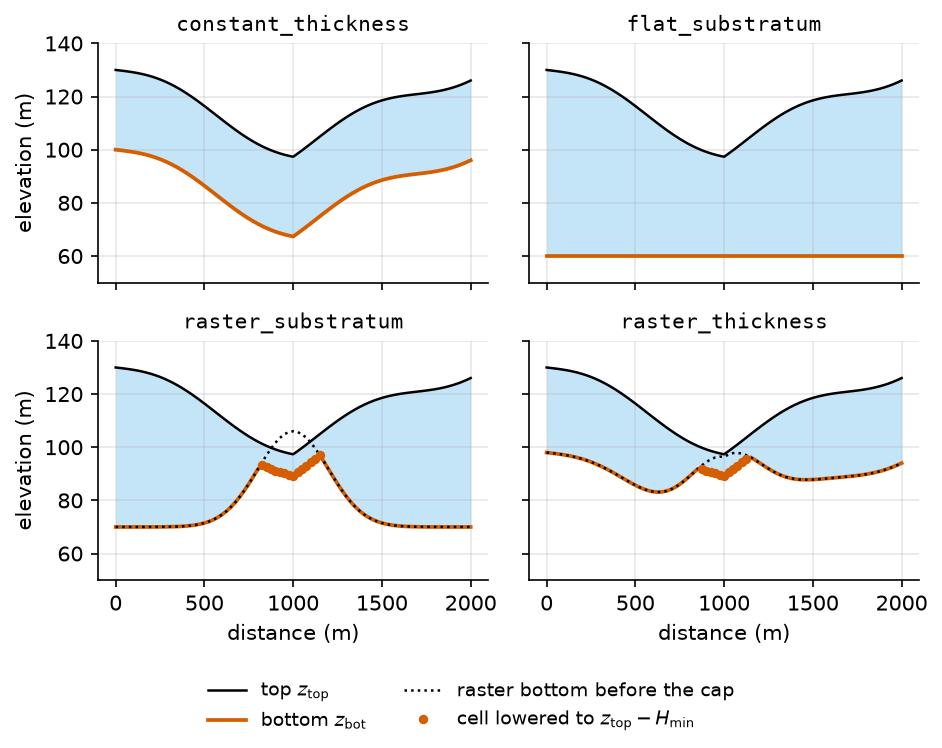
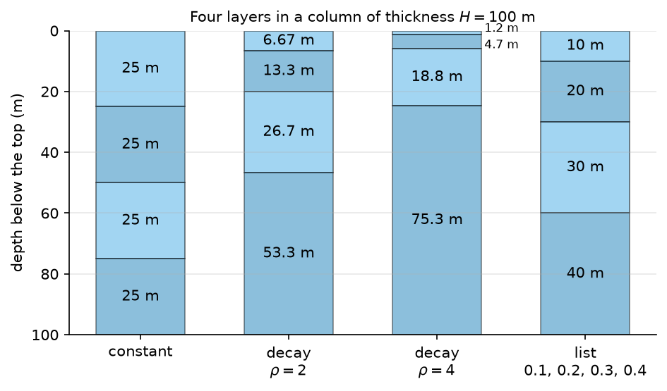
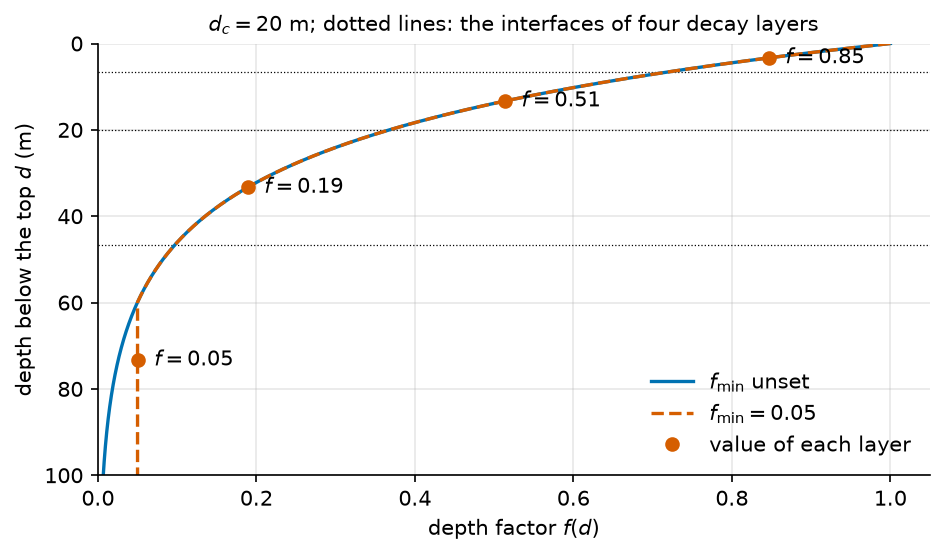
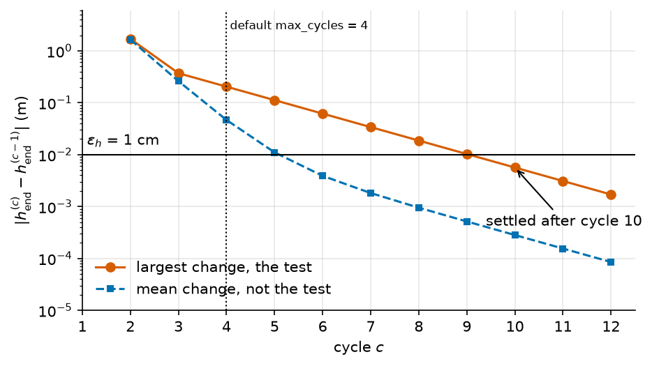

The groundwater flow problem#
What head does the aquifer hold, in every cell and at every time? This page gives the geometry HydroModPy builds for that head, the properties that enter it and the state it starts from. The flow equation itself is MODFLOW’s and is read at its source. For the same subject in plain words, see What the model computes. What each solver supports is listed in Solvers.
Note
Scope. Three solvers read the same [flow] section: MODFLOW 6 (the default),
MODFLOW-NWT and the in-house Boussinesq solver. They solve the same physical
problem and not the same discrete equations. The balance of the two MODFLOW
solvers is in What the solvers solve. The Boussinesq form is on Boussinesq theory.
What enters and leaves the aquifer (recharge, drains, streams, lakes, wells) has
its own pages: Rain and evaporation: the forcing, The daily soil reservoir and How water leaves the aquifer. Where the
one-layer reading stops being true is at the end of Limits.
Notation of this page
Lengths are in metres, time in seconds, and elevation is positive up. A key accepts a value with its unit (“30 m”, “5 m/day”); the code converts it before it builds the solver input. Every symbol of the site is on Notation.
Symbol |
Meaning |
Unit |
Set by |
|---|---|---|---|
\(d\) |
depth below the model top, the variable of the depth factor of a property |
m |
- |
\(\Delta t\) |
length of a stress period, the stretch of time that gets one forcing value |
s |
|
\(\delta t\) |
solver time step, \(\delta t = \Delta t / n_\mathrm{sub}\) |
s |
derived |
\(n_\mathrm{sub}\) |
number of solver time steps in a stress period |
||
\(h\) |
hydraulic head, measured from a fixed datum |
m |
solved, not set |
\(h_0\) |
head at the start of the run |
m |
|
\(z_\mathrm{top}\) |
model top, the land surface |
m |
|
\(z_\mathrm{bot}\) |
bottom of the aquifer |
m |
|
\(H\) |
aquifer thickness, \(H = z_\mathrm{top} - z_\mathrm{bot}\) |
m |
|
\(B\) |
saturated thickness, \(B(h) = \min\bigl(\max(h - z_\mathrm{bot}, 0), H\bigr)\) |
m |
state, not a field |
\(L_h\) |
horizontal length of a flow path, from a divide to the stream that drains it |
m |
derived |
\(H_c\) |
thickness of the constant-thickness model |
m |
|
\(z_s\) |
elevation of the flat substratum |
m |
|
\(Z_r\) |
value of the substratum raster in a cell |
m |
|
\(\zeta\) |
vertical shift of the raster bottom |
m |
|
\(\lambda\) |
factor applied to the thickness raster |
||
\(H_\mathrm{min}\) |
smallest aquifer thickness a raster kind keeps under the top |
m |
|
\(j\) |
layer index, from 1 at the top |
- |
|
\(n_\mathrm{lay}\) |
number of layers |
||
\(p_j\) |
cumulative share of the thickness reached at the bottom of layer \(j\) |
||
\(\rho\) |
ratio of the thicknesses of two successive layers in the |
||
\(K\) |
horizontal hydraulic conductivity, the same along \(x\) and \(y\) |
m/s |
|
\(K_z\) |
vertical hydraulic conductivity, \(K / \beta\), or the parameter with the id |
m/s |
|
\(\beta\) |
ratio \(K / K_z\) |
||
\(S_s\) |
specific storage |
1/m |
|
\(S_y\) |
specific yield |
||
\(f(d)\) |
factor that scales a property with the depth \(d\) below the top |
||
\(d_c\) |
characteristic depth of the exponential depth factor |
m |
|
\(f_\mathrm{min}\) |
floor of the exponential depth factor, none when the key is unset |
||
\(N\) |
recharge rate, positive into the aquifer |
m/s |
|
\(\bar N\) |
recharge averaged over the catchment and a period of time ( |
m/s |
derived |
\(\Phi_{n,p}\) |
flow into cell \(n\) from the stress package \(p\), positive into the aquifer |
m³/s |
|
\(n, m\) |
cell indices; \(\mathcal{N}(n)\) is the set of cells that share a face with \(n\) |
the grid, The mesh |
|
\(a_n\) |
plan area of cell \(n\) |
m² |
the grid |
\(G_{nm}\) |
conductance between cells \(n\) and \(m\) |
m²/s |
derived from \(K\), the geometry and the heads |
\(w_{nm}\) |
width of the face shared by cells \(n\) and \(m\) |
m |
the grid |
\(c_{nm}\) |
distance from the centre of \(n\) to the face it shares with \(m\) |
m |
the grid |
\(\varepsilon_h\) |
head tolerance of the cyclic spin-up |
m |
The domain#
Two surfaces bound the aquifer.
The top \(z_\mathrm{top}\) is the digital elevation model of the catchment,
read from data.dem. By default the grid takes the value of the DEM at the
centre of each cell, and nothing else moves the top.
modflow6.sgrid.top_sampling.mode can ask for a statistic over the pixels
of the cell instead, with a lower value for the cells that hold a channel
(5. The top of a cell).
The bottom \(z_\mathrm{bot}\) comes from a depth model, chosen by
domain.depth_model.kind. Four kinds exist:
Kind |
Bottom |
Reads |
|---|---|---|
|
\(z_\mathrm{bot} = z_\mathrm{top} - H_c\) |
|
|
\(z_\mathrm{bot} = z_s\) |
|
|
\(z_\mathrm{bot} = \min\bigl(Z_r + \zeta,\ z_\mathrm{top} - H_\mathrm{min}\bigr)\) |
the raster of |
|
\(z_\mathrm{bot} = \min\bigl(z_\mathrm{top} - \lambda Z_r + \zeta,\ z_\mathrm{top} - H_\mathrm{min}\bigr)\) |
the raster of |
A flat substratum is an elevation, not a depth: where the land surface drops under it, no aquifer is left. A raster kind:
reprojects the raster onto the grid of the top;
refuses the run if one cell of the domain has no raster value, so the raster must cover the whole extent of the domain, buffer included when
geographic.domain_extentis"box";applies \(\lambda\) and \(\zeta\);
lowers the bottom to \(z_\mathrm{top} - H_\mathrm{min}\) wherever it would come closer to the top than that, and logs a warning that counts the cells;
refuses the run if every cell needs that correction, since no aquifer would remain.

Fig. 19 The four depth models on one valley, as build_domain returns them. Look at the
valley floor of the two raster kinds: where the raster bottom (dotted) comes within
\(H_\mathrm{min}\) of the top (8 m here), the cells (dots) are lowered to
\(z_\mathrm{top} - H_\mathrm{min}\).#
Take a top of 120 m everywhere and a raster that holds 40 m, or 85 m for the
elevation kind, in every cell but one. The table gives the bottom of that cell, as
build_domain returns it (the check ran the function).
Depth model |
Raster value |
\(\zeta\), \(\lambda\) |
Bottom |
|---|---|---|---|
|
40 m |
5 m, 1 |
85 m |
|
40 m |
0 m, 2 |
40 m |
|
0.5 m, with \(H_\mathrm{min} = 1\) m |
0 m, 1 |
119 m, with a warning |
|
85 m |
-5 m |
80 m |
A raster kind needs the raster. data.substratum takes exactly one source.
A file that inherits a constant thickness removes it with thickness__delete when
it switches to a raster ([domain],
The grammar of a HydroModPy file).
The thickness of an aquifer is an assumption in this model, not a result. No
equation below estimates it. The field of the constant thickness declares itself
calibrable, in log space. In the code: Domain._build_surfaces.
The solver grid and its layers#
The grid samples \(z_\mathrm{top}\) and \(z_\mathrm{bot}\) at the centre of each cell (the cell layout is on The mesh). A cell with no finite value in either surface becomes inactive in every layer. The grid is refused when \(z_\mathrm{bot} \ge z_\mathrm{top}\) on a valid cell. On a runtime mesh, a warning names the columns thicker than 500 m and than 10 times the median: a raster nodata value read as an elevation produces them (8. The checks the code applies).
The thickness is then cut into \(n_\mathrm{lay}\) layers. The bottom of layer \(j\) is
The shares \(p_j\) are the same for every cell. Three rules build them, chosen by
modflow6.sgrid.vertical.genmtd_lay:
|
\(p_j\) |
|---|---|
|
\(j / n_\mathrm{lay}\) |
|
\((1 - \rho^{j}) / (1 - \rho^{n_\mathrm{lay}})\) |
|
the running sum of |
The decay rule needs \(\rho > 1\), and the file is refused otherwise: the layers
then thicken with depth. With \(\rho = 2\) and four layers they hold 1, 2, 4 and 8
fifteenths of the column, from the top down. A list must sum to 1. With one
layer, \(p_1 = 1\) and the column is one cell. MODFLOW-NWT reads the same keys
under modflownwt.sgrid.vertical.

Fig. 21 Four layers in a column of 100 m, from _compute_layer_proportions. Look at
the decay columns: the larger \(\rho\), the thinner the top layer and the thicker
the bottom one.#
What the layers can represent. Every layer reuses the planar cells and their
connections, and only the top and the bottom of the column vary from cell to cell.
Geology therefore varies through the properties of each layer and cell
(The properties), not through surfaces of its own. A stratigraphy whose
interfaces cross the proportions, a layer that disappears, or a connection that
changes from one layer to the next is not represented. MODFLOW 6 builds every
grid, structured or not, as a vertex grid (DISV), never as DISU. The
Boussinesq solver has no layers: it works on one triangle per column. In the
code: _compute_layer_proportions.
The properties#
Each property is a field: one value for the whole domain, or one value per zone ([flow.param]). How a zone map becomes one value per cell is on From a zone map to the cells.
Property |
Needed by a steady run |
Needed by a transient run |
|---|---|---|
MODFLOW 6 and MODFLOW-NWT |
\(K\) |
\(K\), \(S_y\), \(S_s\) |
Boussinesq |
\(K\) |
\(K\), \(S_y\) |
The Boussinesq solver reads no \(S_s\). In a steady MODFLOW run, a missing \(S_y\) or \(S_s\) is filled with zero. In a transient run, a missing one stops the run. Example 04 gives the three values, one for the whole catchment:
flow.param.K.field.value in step4_transient.tomlflow.param.K.field.value Hydraulic conductivity m/s valid 1e-14 .. 100 Hydraulic conductivity of the K table, in m/s. form number or "<n> m/s" default not set calibrate log, prior log_uniform only if kind = "homogeneous" current 5e-05 set by step1_minimal.toml:52
flow.param.Sy.field.value in step4_transient.tomlflow.param.Sy.field.value Specific yield - valid 0.0001 .. 0.5 Specific yield of the Sy table, dimensionless. form number default not set calibrate log, prior log_uniform only if kind = "homogeneous" current 0.05 set by step1_minimal.toml:58
flow.param.Ss.field.value in step4_transient.tomlflow.param.Ss.field.value Specific storage 1/m valid 1e-12 .. 0.001 Specific storage of the Ss table, in 1/m. form number or "<n> 1/m" default not set calibrate log, prior log_uniform only if kind = "homogeneous" current 1e-05 set by step4_transient.toml:27
A depth factor. A property can carry a field_vertical_profile. The value
of layer \(j\) in a column is the value of the field times \(f(d_j)\), where \(d_j\) is
the depth of the middle of the layer below \(z_\mathrm{top}\). For
mode = "exponential":
Without min_factor, the
factor has no floor and tends to zero with depth. For mode = "tabulated", the
factor is a linear or stepwise interpolation of the table you give, equal to the
first and last factor outside the table. With one layer, \(d_j\) is half the
thickness: the profile then gives one factor per cell and no variation with
depth.

Fig. 23 The depth factor for \(d_c = 20\) m, from FieldParam.vertical_factor.
Each layer of a four-layer decay column takes the factor at its centre (dots), not
an average over its thickness. Look at the deepest layer: without a floor its
factor would be 0.03, with \(f_\mathrm{min} = 0.05\) it stays at 0.05.#
Vertical conductivity. MODFLOW 6 reads \(K_z = K / \beta\), with \(\beta\) the
modflow6.process_specific.vka, layer by layer, so a depth factor on \(K\)
reaches \(K_z\). A parameter with the id Kv replaces it with a conductivity per
cell, and a file that gives Kv and a vka other than 1 is refused.
The code refuses a \(K\) that is zero, negative or not finite on an active cell. A
heterogeneous \(K\) whose zones do not cover the whole domain produces exactly that.
In the code: FieldParam.vertical_factor.
What the solvers solve#
MODFLOW 6 and MODFLOW-NWT write Darcy’s law and mass conservation for the head in each cell, by control volumes, with one head per cell at its centre [Harbaugh, 2005, Langevin et al., 2017]; chapter 2 of Langevin et al. [2017] gives the control-volume form. The derivation is not repeated here. Three pieces of it are used by other pages of this site, so they are written once.
In a catchment the aquifer is mostly unconfined. The head can sit below the top of a cell, and then the thickness that carries flow is the saturated thickness
For a cell \(n\), the balance of one time step is
The left side is the water that enters the cell during the step: the exchange with the neighbours and the stress packages. The right side is the change of the volume stored. \(h^\mathrm{old}\) is the head at the start of the step. This is the one statement of the balance on the site; the solver pages refer to it. Between two cells of a layer, the conductance joins the two half cells in series:
with \(w_{nm}\) the width of the shared face and \(c_{nm}\) the distance from the centre of \(n\) to that face. Under the Newton formulation, the series is built with the full cell thicknesses and multiplied by the saturated fraction of the upstream cell ([Langevin et al., 2017]).
What HydroModPy sets:
Every cell is convertible.
icelltype = 1in the MODFLOW 6NPFpackage,iconvert = 1inSTO,laytyp = 1in the MODFLOW-NWTUPWpackage. The specific yield \(S_y\) acts while the water table is inside the cell, and \(S_s\) above the top of a full cell. In example 04, \(S_y = 0.05\) and \(S_s B \le 3 \times 10^{-4}\), a ratio of about 170.No
CELL_AVERAGINGoption. The series average of the equation above is the MODFLOW 6 default.Newton, with under-relaxation, by default. MODFLOW-NWT is the Newton formulation of MODFLOW-2005 [Niswonger et al., 2011], on the same convertible layers and a structured grid. The options and the stopping tests are on The solution: Newton and IMS.
Voronoi faces bisect the centres. That is the case the two-point form of (18) needs. Elsewhere, the XT3D correction is on XT3D on irregular meshes.
The Boussinesq solver writes the same balance on triangles. Its edge flux takes the harmonic mean of \(K\) and the arithmetic mean of \(B\) of the two cells, and its storage has no \(S_s\). See Boussinesq theory.
The smoothing of \(B\) near the bottom of a cell is on The solvers of the aquifer.
Time#
The run is cut into stress periods of length \(\Delta t\), one per forcing value
(Rain and evaporation: the forcing). Within a period the forcing is constant. Each period is cut into
\(n_\mathrm{sub}\) equal time steps \(\delta t = \Delta t / n_\mathrm{sub}\), and the
time integration is the backward Euler scheme of [Langevin et al., 2017]:
(17) is written with the stress and the conductances at the end
of the step. The time step multiplier is 1, so the steps of a period are equal.
The one exception is modflow6.runtime.mf6_ats: with it, MODFLOW 6 may cut a
transient step further where the solver does not converge, never above the step
asked for. The Boussinesq solver takes one step per period.
The solver time step is a numerical choice: a period solved in one step differs from the same period in several. Time steps gives the size of that difference on a test case.
flow.flow_regime picks the regime. A steady run is one steady period
over the whole [simulation.time] window, whatever step the file writes. In a
transient run, flow.first_period_steady marks the first
period as steady, in the three solvers. In a steady period the right side
of the balance is zero, the storage plays no part, and the heads settle where the
forcing of that period puts them. Example 04 states the regime:
flow.flow_regime in step4_transient.tomlflow.flow_regime Whether the flow is solved as one equilibrium state or through time over the stress periods of [simulation.time]. form "steady" | "transient" default "transient" value "steady" Solves one equilibrium state, with no storage term: one stress period over the whole [simulation.time] window, whatever its step_value says, with the forcings averaged over the window. value "transient" Solves the heads through time; it starts from the state [flow.ic] gives. current "transient" set by step4_transient.toml:20
In the code: sto_period_settings.
The starting heads#
The head at the start of the run, \(h_0\), is declared in the flat table [flow.ic].
Its value is the same in every layer of a column. bottom is the bottom of the
deepest layer.
|
\(h_0\) |
|---|---|
|
\(z_\mathrm{top}\) |
|
\(z_\mathrm{top} - v\), with \(v\) the |
|
\(z_{\mathrm{bot},n_\mathrm{lay}}\) |
|
\(v\) |
|
the solution \(h^\star\) of the steady problem under a constant recharge, see below |
|
the state a cyclic run settles at, see below |
In every case, a cell on an imposed head (an ocean, a stream or a side boundary)
starts at that head. top is a full aquifer; the card of flow.ic.h.type
gives the default.
The equilibrium. For steady_state, the code first solves an auxiliary
steady problem with the same solver, the same grid and the same properties. Its
recharge is a constant, set by flow.ic.h.source: the mean of the whole
record, or the rate that you state. The result is \(h_0\):
where \(\bar N\) is the constant recharge and \(q_\mathrm{bc}\) the exchanges with
the boundaries per unit area, held at the value of the first period
(flow.ic.h.boundary_condition_policy).
The settled cycle. For spinup_cyclic, the run repeats its own period. Cycle
\(c + 1\) starts from the heads where cycle \(c\) ended, \(h_\mathrm{end}^{(c)}\), and
the first cycle starts from flow.ic.h.first_cycle_from. The loop stops when
with \(\varepsilon_h\) the flow.ic.h.tol_head, or after
flow.ic.h.max_cycles cycles. The maximum counts every cell, not the mean.

Fig. 25 The stopping test of (19), applied by cycles_have_settled to 200
cells of which 10 drift slowly. Look at the two curves: the mean change falls under
\(\varepsilon_h\) at cycle 6, the largest change only at cycle 10, and
the largest change decides. With the default of 4 cycles, this loop would stop
before it settles.#
When the first period is steady. With flow.first_period_steady at its
default, period 0 is solved as a steady state, and the heads above are only the
first guess of that solve. They change the convergence and not the state reached.
To make the run start from a state you choose, set it to false (see
[flow.ic]).
A run can also restart from the last time step of an earlier run
(flow.restart_from). That state replaces \(h_0\). In the code:
build_head_initial_condition_array.
What enters and leaves#
The stress terms \(\Phi_{n,p}\) of the balance come from packages. Each one has its page.
Term |
MODFLOW 6 package |
Page |
|---|---|---|
Recharge \(N\) |
|
|
Evapotranspiration that the soil did not meet, or a negative recharge routed to evaporation |
|
|
Drainage at the land surface |
|
|
Imposed heads: ocean, stream, sides |
|
|
Wells |
|
|
Stream reaches, lakes, flow barriers, water transfers |
|
Recharge and injection are positive when water enters the aquifer, and a well with
a negative rate pumps. Where no boundary is activated, the edge of the domain
carries no flow. The two keys that activate them are flow.active_bc and
flow.active_sinks_sources.
Limits#
Shallow and unconfined. Every cell is convertible. The code is built for the saturated zone of a catchment, from the surface down to a substratum that you place. The thickness is chosen, not computed.
No unsaturated flow. The code builds no
UZFpackage. The water that reaches the water table is a recharge, given or computed by the daily soil store of The daily soil reservoir.No density-dependent flow, no compaction, no delayed yield. The code builds neither a
BUYnor aCSUBpackage, and the specific yield releases its water at once.Constant forcing, impervious edges. The forcing is constant over a stress period. The bottom and the sides of the domain are impervious, except where a boundary is activated.
A bottom above the top is refused. So is a bottom that equals it, and a raster that leaves one cell without a value.
Layers cannot pinch out. They share one rule of proportions, and the thickness cannot fall below \(H_\mathrm{min}\) with a raster kind.
Boussinesq has one layer and no \(S_s\). It reads \(K\) and \(S_y\) only.
Newton and rewetting exclude each other in MODFLOW 6.
A steady first period is refused with the soil reservoir. The reservoir sends a daily recharge that is zero after a dry day, and a one-period steady state would start the run from a drained aquifer.
Each solver has its own boundaries. What each solver supports is listed in Solvers, and the file is refused when the solver cannot carry a boundary it asks for.
Where the one-layer reading stops#
A model with one layer, and the Boussinesq solver always, are Dupuit by construction: the flow is horizontal and the head does not vary with depth [Brutsaert, 2005, Dupuit, 1863]. Over a flow path of length \(L_h\) through a saturated thickness \(B\), the vertical head difference against the horizontal one scales as \(\beta\,(B / L_h)^2\), an order of magnitude without prefactor. With \(B = 30\) m and \(\beta = 10\), that is 0.036 under hillslopes of 500 m and 0.9 under hillslopes of 100 m, where Dupuit no longer holds. Within about \(B\sqrt{\beta}\) of a stream (100 m here, one or two cells of a 75 m grid), the flow converges and bends upwards. A one-layer model leaves that resistance to the conductance of the drain or of the stream cell (How water leaves the aquifer).
The water table follows the topography, and the drains carry much of the outflow, when the criterion of Haitjema and Mitchell-Bruker [2005] exceeds 1. It compares the recharge, times the squared distance between streams, with the conductivity, the thickness and the largest rise of the land above the streams, and it assumes a uniform recharge and thickness. Below 1, the drains act along the streams only.
HydroModPy has no seepage face below the top of a cell. The drains of the top
layer and the surface closures of the Boussinesq solver take the water at the cell
top, and a stream imposed as a head fixes the head of the whole cell. With
modflow6.sgrid.vertical.nlay above 1 and a ratio
modflow6.process_specific.vka, MODFLOW 6 and MODFLOW-NWT carry one head per
layer, so the vertical resistance enters the solution. The code computes none of
these ratios and refuses no model for its aspect ratio. A depth factor
((15)) shortens the effective thickness.
Parameters of this page#
The fields below are the ones that appear in the equations. Open a row for its card.
Checked by#
The tests that import the code of this page. The box is generated: a new test appears here on the next build.
196 test files import hydromodpy.physics.flow, hydromodpy.spatial.domain, hydromodpy.spatial.field.core.field_param, hydromodpy.solver.field_property_mapping, hydromodpy.solver.modflow_grid, hydromodpy.solver.initial_conditions, hydromodpy.solver.steady_initial_conditions, hydromodpy.solver.modflow6.build, hydromodpy.solver.modflow_nwt.nwt. Their names say what they check.
integration: 8
- Domain build seals a job. domain
- Auto registration. state
- Modflow6 flow barrier hfb.
- Modflow6 head calibration disv.
- Modflow6 lake piecewise forcing.
- Modflow6 two lake sill.
- Shared recharge equivalence.
- The soil recharge reaches modflow6 cell by cell.
unit: 186
- A gauge snaps only when asked. calibration
- A trial rebuilds the vertical profile field. calibration
- Bounds preflight. calibration
- Curve number and runoff time are calibrable. calibration
- Recharge target units. calibration
- Runoff lag is calibrable. calibration
- Soil bounds beyond the registry are refused at load. calibration
- The aquifer geometry is calibrable. calibration
- The catalogue of targets. calibration
- The catalogue sees a value written with its unit. calibration
- The dem conditioning is an offered departure. calibration
- The evt extinction depth is calibrable. calibration
- The impervious fraction is calibrable. calibration
- The replaced recharge rate is not calibrated in soil mode. calibration
- The soil capacity is offered to the calibration as soil ru. calibration
- The transit time does not borrow a conductivity range. calibration
- The vertical profile characteristic depth is calibrable. calibration
- A template carries the variant it was given. config
- An exported schema says what it is. config
- An unknown flow solver is named. config
- Flow barrier config. config
- Flow bc native. config
- Flow lake config. config
- Flow param native. config
- Flow sfr config. config
- Lake incompatible backend. config
- Pint units. config
- Restart from needs a backend that reads it. config
- Schema export. config
- Taught keys are user keys. config
- Units roundtrip. config
- Unread forcing and lake keys are refused. config
- Wells need their activation. config
- A quoted boolean is refused. core
- Domain build. domain
- Domain depth model. domain
- Domain raster substratum. domain
- Spatial support. domain
- Zone arming. domain
- Field param. field
- Geology field. field
- Review cases. field
- Terrain engine selection. geographic
- The regularised bed reaches the top and nothing else. geographic
- Launcher run id runtime. launchers
- Launcher run id setup. launchers
- Mesh catchment launcher. launchers
- Structure updaters. launchers
- One coverage rule for every forcing record. mesh/cartesian_grid/field_discretization
- Sgrid field discretization config. mesh/cartesian_grid/field_discretization
- Sgrid fieldparam discretization. mesh/cartesian_grid/field_discretization
- Extruded fieldparam discretization. mesh/gmsh_grid
- Voronoi. mesh
- A negative lake forcing is refused. physics
- A recharge rate beside a soil reservoir is refused. physics
- A soil run does not open on a one period steady state. physics
- A structure is not a calibratable property. physics
- Cutoff wall helpers. physics
- Flow barrier binder. physics
- Flow boundary condition registry. physics
- Flow boundary forcing capability. physics
- Flow config dirichlet. physics
- Flow contract helpers. physics
- Flow initial conditions config. physics
- Flow param inline units. physics
- Flow regime. physics
- Flow time forcing. physics
- Flow toml loader fields. physics
- Flow well units. physics
- Lake and sfr rates are lengths per time. physics
- Lake boundary registry. physics
- Lake flux forcing binder. physics
- Recharge first period unit. physics
- Sfr runoff binder. physics
- Steady initial condition rate. physics
- The etp the soil leaves is marked and no file can mark it. physics
- The initial condition types have one source. physics
- Spinup. project
- Lake abacus persistence. results
- A chain feeds one job from another. schema
- Schema annotations. schema
- Boussinesq flow adapter build. simulation
- Boussinesq flow adapter run. simulation
- Extract dry cell sentinels. simulation
- Flow model name resolution. simulation
- Post run hands the budget terms to the extractor. simulation
- Process context factory. simulation
- Results post run. simulation
- Runner process context. simulation
- A structured grid coarser than its dem takes the zonal top. solver/modflow_grid
- Discretization zonal seam. solver/modflow_grid
- Solver mesh. solver/modflow_grid
- A calibration trial value reaches the nwt evt package. solver/modflow_nwt
- A constant head below its bottom is refused. solver/modflow_nwt
- Discretization. solver/modflow_nwt
- Flow adapter bas contract. solver/modflow_nwt
- Forcing boundary conditions. solver/modflow_nwt
- Forcing recharge payload. solver/modflow_nwt
- Forcing wells. solver/modflow_nwt
- Modflow config. solver/modflow_nwt
- Modflow domain surfaces. solver/modflow_nwt
- Modflow options. solver/modflow_nwt
- Nwt packages write their budget. solver/modflow_nwt
- Postprocess. solver/modflow_nwt
- Property mapping spatial support. solver/modflow_nwt
- A backend declares what it serves. solver
- A calibration trial value reaches the npf k array. solver
- A calibration trial value reaches the soil evt package. solver
- A cyclic spinup settles or says it did not. solver
- A stamp carries the period mean flux. solver
- A trial that moves the recharge writes it inside its own folder. solver
- Boussinesq first period steady. solver
- Boussinesq initial conditions. solver
- Boussinesq partition release depth. solver
- Boussinesq time steps and auto engine. solver
- Conductivity reaches the solver positive. solver
- Constant head roles. solver
- Discharge routing. solver
- Drain discharge band. solver
- First clim is one rule for every solver. solver
- Flow barrier hfb. solver
- Flow barrier resolver. solver
- Initial conditions. solver
- Lake band runoff wiring. solver
- Modflow6 ats perioddata. solver
- Modflow6 boundary chd. solver
- Modflow6 cleanup. solver
- Modflow6 discretization choice. solver
- Modflow6 disv grid origin. solver
- Modflow6 drn conductance. solver
- Modflow6 evt. solver
- Modflow6 evt vectorized. solver
- Modflow6 flow property sidecar. solver
- Modflow6 idomain. solver
- Modflow6 initial conditions start heads. solver
- Modflow6 lake bed carve. solver
- Modflow6 lake connectiondata. solver
- Modflow6 lake idomain mask. solver
- Modflow6 lake outlets. solver
- Modflow6 lake rch evt masking. solver
- Modflow6 lake restart stage. solver
- Modflow6 lake voronoi grid. solver
- Modflow6 listing path. solver
- Modflow6 multilake preretenue. solver
- Modflow6 mvr lake cascade. solver
- Modflow6 nstp indexing. solver
- Modflow6 postprocessing budget. solver
- Modflow6 postprocessing flow mesh. solver
- Modflow6 postprocessing transport mesh. solver
- Modflow6 prt contracts. solver
- Modflow6 recharge. solver
- Modflow6 robustness. solver
- Modflow6 sfr builder. solver
- Modflow6 steady recharge evt. solver
- Modflow6 transport correctness. solver
- Modflow6 ts6 time series. solver
- Modflow6 voronoi dual support. solver
- Modflow6 watertable. solver
- Modflow6 well validation. solver
- Modflow6 wells. solver
- Modflow6 xt3d rewet options. solver
- Recharge stack is released. solver
- Sfr rtp clamp order. solver
- Sink fill. solver
- Solver time units. solver
- The atelier etp still draws no evt under modflow6. solver
- The build hands the descent to the networks. solver
- The build leaves the descent with the dam feet. solver
- The dam foot of each lake is kept with the descent. solver
- The descent follows the channel tree a. solver
- The descent sidecar reads back what the build wrote. solver
- The discharge is routed on the descent. solver
- The graph says what it can drain. solver
- The mf6 grid carries a computational top. solver
- The nwt build keeps its descent. solver
- The soil etp and a routed recharge deficit cannot share evt. solver
- The soil evt rate goes to binary files. solver
- The soil evt rate is zero on inactive lake and constant head cells. solver
- The soil evt surface follows the drain elevation. solver
- The solver mesh descent crosses inactive lakes. solver
- The zonal channel mask keeps the stream background out. solver
- Xt3d advisor. solver
- A trial moves the aquifer geometry. workflow
- Setup support ids. workflow
- Sfr network binding. workflow
- The run records its aquifer thickness. workflow
In the code#
What |
Where |
|---|---|
The top, the bottom and the raster depth models |
|
Reading the substratum raster |
|
Layers, the check bottom below top |
|
The properties, per cell and per layer |
|
The depth factor |
|
The MODFLOW 6 balance: |
|
The MODFLOW-NWT balance: |
|
Steady and transient periods |
|
The starting heads |
|
See also#
The solvers of the aquifer: what each solver adds to this problem, and how MODFLOW 6 and MODFLOW-NWT differ.
Boussinesq theory: the in-house solver in full.
[flow.ic]: the keys of the starting state.